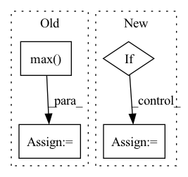

Pattern ID :361
Before Change
def forward(self, y_s: torch.Tensor, y_s_adv: torch.Tensor, y_t: torch.Tensor, y_t_adv: torch.Tensor) -> torch.Tensor:
_, prediction_s = y_s.max(dim=1)
_, prediction_t = y_t.max(dim=1)
return self.margin * F.cross_entropy(y_s_adv, prediction_s, reduction=self.reduction) \
+ F.nll_loss(shift_log(1. - F.softmax(y_t_adv, dim=1)), prediction_t, reduction=self.reduction)
After Change
loss = -self.margin * self.source_disparity(y_s, y_s_adv) + self.target_disparity(y_t, y_t_adv)
if self.reduction == "mean":
loss = loss.mean()
elif :
loss = loss.sum()
return loss
In pattern: SUPERPATTERN
Frequency: 3
Non-data size: 4
Instances Fragment ID: 1383653
Project Name: thuml/transfer-learning-library
Commit Name: 58bbc2031a2503955c79eff24797de49ee7d7ee7
Time: 2021-01-07
Author: 13126830206@163.com
File Name: dalib/adaptation/mdd.py
M Class Name: MarginDisparityDiscrepancy
N Class Name: MarginDisparityDiscrepancy
M Method Name: forward(5)
N Method Name: forward(5)
M Parent Class: nn.Module
N Parent Class: nn.Module
M File Name: dalib/adaptation/mdd.py
N File Name: dalib/adaptation/mdd.py
M Start Line: 62
M End Line: 65
N Start Line: 61
N End Line: 66
Before Change
// Pooling
// out: (BB, embedding_dim, NN)
if self._pooling_func_name == "max":
out = torch.max( out, -1, keepdim=True) [0]
elif self._pooling_func_name == "mean":
out = torch.mean(out, keepdim=True, dim=-1)
elif self._pooling_func_name == "sum":
out = torch.sum(out, keepdim=True, dim=-1)
else:
raise ValueError(f"Pooling function {self._pooling_func_name} is not yet supported!")
// out: (BB, embedding_dim, 1)
out = torch.flatten(out, start_dim=-2)
// out: (BB, embedding_dim)
out = self.fc1(out)After Change
// Pooling
// out: (BB, embedding_dim, NN)
masking_input = {"in_tensor": out.transpose(2, 1)}
if self.use_masking:
masking_input["mask_tensor"] = masking_tensor
out = self.pooling_block(masking_input)["masking_out"]
// output_tensor: (BB, embedding_dim)
Fragment ID: 1383652
Project Name: enlite-ai/maze
Commit Name: 53a9f4e4997b8a5451f14fb57dd6c5cb9becd110
Time: 2021-04-15
Author: office@enlite.ai
File Name: maze/perception/blocks/feed_forward/point_net.py
M Class Name: PointNetFeatureTransformNet
N Class Name: PointNetFeatureTransformNet
M Method Name: forward(3)
N Method Name: forward(2)
M Parent Class: nn.Module
N Parent Class: nn.Module
M File Name: maze/perception/blocks/feed_forward/point_net.py
N File Name: maze/perception/blocks/feed_forward/point_net.py
M Start Line: 93
M End Line: 127
N Start Line: 80
N End Line: 134
Before Change
loss = loss_loc * self.box_ratio + loss_conf * self.balance[l] * self.obj_ratio + loss_cls * self.cls_ratio
num_pos = torch.sum(y_true[..., 4])
num_pos = torch.max( num_pos, torch.ones_like(num_pos))
return loss, num_pos
def get_near_points(self, x, y, i, j):
sub_x = x - iAfter Change
loss = 0
n = torch.sum(y_true[..., 4] == 1)
if n != 0:
//---------------------------------------------------------------//
// 计算预测结果和真实结果的giou
//----------------------------------------------------------------//
giou = self.box_giou(pred_boxes, y_true[..., :4])
loss_loc = torch.mean((1 - giou)[y_true[..., 4] == 1])
loss_cls = torch.mean(self.BCELoss(pred_cls[y_true[..., 4] == 1], self.smooth_labels(y_true[..., 5:][y_true[..., 4] == 1], self.label_smoothing, self.num_classes)))
loss += loss_loc * self.box_ratio + loss_cls * self.cls_ratio
//-----------------------------------------------------------//
// 计算置信度的loss
//-----------------------------------------------------------// Fragment ID: 1383654
Project Name: bubbliiiing/yolov5-pytorch
Commit Name: 27ae9bd10c96138c60752d1da4fa965c0b7372f3
Time: 2022-01-21
Author: 47347516+bubbliiiing@users.noreply.github.com
File Name: nets/yolo_training.py
M Class Name: YOLOLoss
N Class Name: YOLOLoss
M Method Name: forward(4)
N Method Name: forward(4)
M Parent Class: nn.Module
N Parent Class: nn.Module
M File Name: nets/yolo_training.py
N File Name: nets/yolo_training.py
M Start Line: 156
M End Line: 200
N Start Line: 159
N End Line: 201